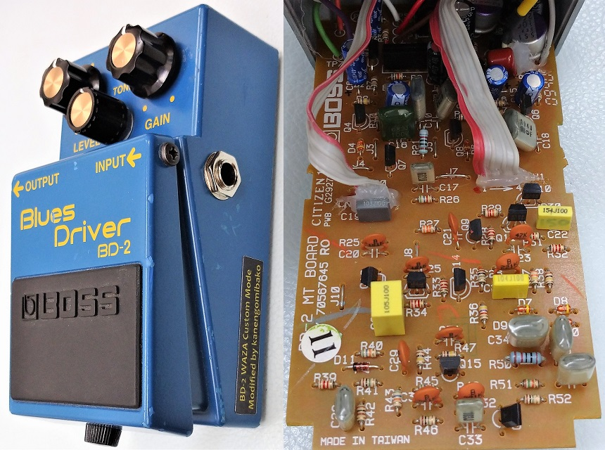
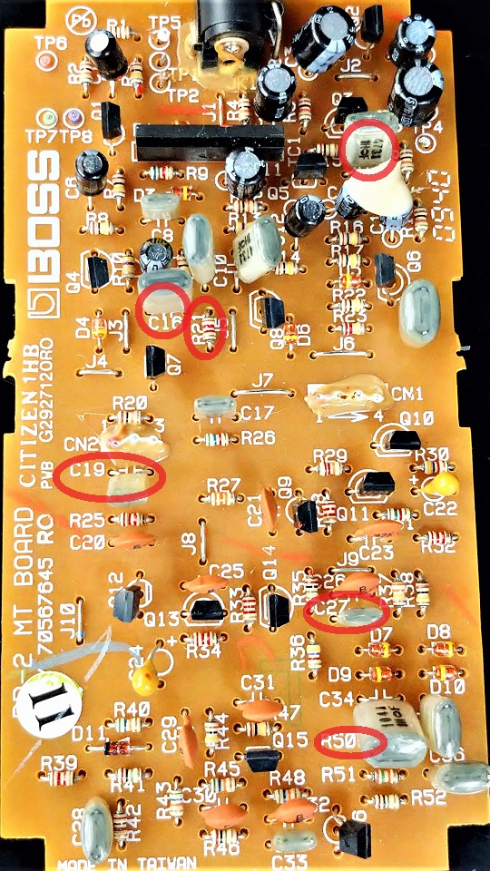
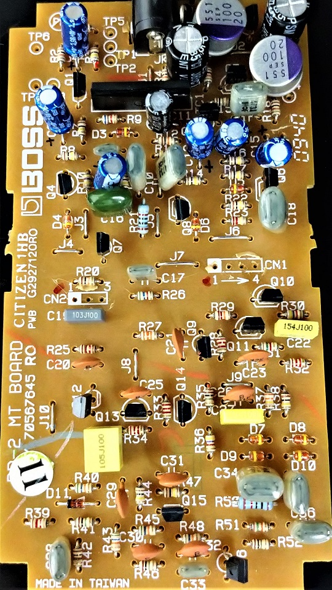
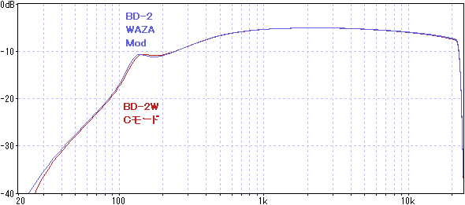

BOSS BD-2 WAZA Mod
2022年08月20日 カテゴリー：修理・改造・解析

以前行ったBOSS BD-2Wの解析により、WAZA CRAFTでのカスタムモードの内容が明らかになりました。これを参考に、スルーホール部品版BD-2をBD-2Wのカスタムモード風にモディファイしてみました。やってみたいと思われる方は他にいないかもしれませんが、勝手に「WAZA Mod」と呼ぶことにします。
【WAZA Mod】
BD-2WではアナログスイッチICにより抵抗やコンデンサの定数切替が行われています。そのまま厳密に真似しようとすると取り付ける部品数が多く大変なので、似た値に交換することで対応します。
変更箇所は以下の7か所です。C14は、SMD版BD-2のように1μFでもよいでしょう（バッファの強化なので、変更なしでもOK）。
・C14: 47nF → 2.2μF
・R50: 1MΩ → 10kΩ
・C27: 2.2nF → 100nF
・C19: 5.6nF → 10nF
・C100: 18nF → 39nF
・C16: 56nF → 68nF
・R21: 1.2kΩ → 820Ω
C100はトーンポットが付いている基板にあります。それ以外は下写真の赤丸の位置です。

【部品交換】
電解コンデンサやタンタルコンデンサは特に劣化が心配な部品なので、新品に交換しておきました。タンタルコンデンサは手持ちがなかったので、フィルムコンデンサです。ケース内部に余裕があるので、電解コンデンサは普段あまり使わない大き目のものを使いました。オペアンプは、SMD版BD-2と同じNJM4580にしました。

※C14を変更するのを忘れていたので、後から1μFに変更しています。また、470kΩ表記の抵抗R10が実測492kΩだったため、他の470kΩのものに交換しました。
【実機比較】
今回のモディファイ機とBD-2W実機をスイッチャーで切り替えながら弾き比べてみましたが、ほぼ違いはないかなと感じました。実測した周波数特性は下図です（GAIN 0% TONE 100%）。

少しだけ低音域がズレていますが、概ね成功と言ってよいと思います。